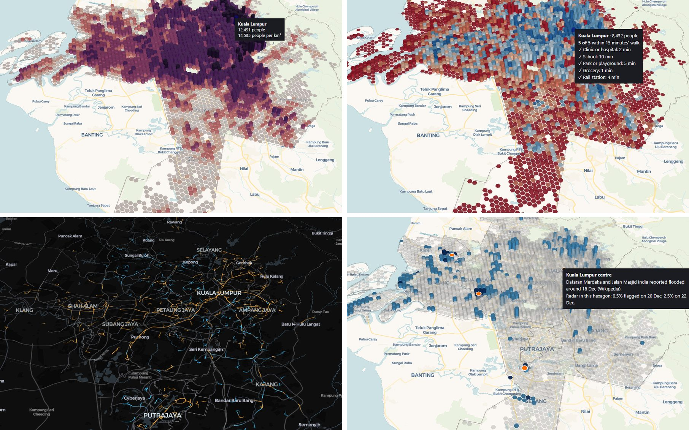

The question
In December 2021, days of heavy rain flooded large parts of Selangor and Kuala Lumpur. Tens of thousands of people left their homes, and whole townships such as Taman Sri Muda could only be reached by boat. Five years on, I wanted to ask a simple question of open data: how well served are the places that flooded, today? Can the people who live there walk to a clinic, a school or a grocery, and how often does a bus pass?
Answering it needs several layers on the same map, so the project was built in five Stages on one hexagon grid, each publishable on its own. Every step is in Python notebooks that anyone can rerun.
The data
| What | Source |
|---|---|
| People in each hexagon (H3, about 0.74 km²) | Kontur Population 2023, via HDX |
| Clinics, schools, parks, groceries; streets and footpaths | OpenStreetMap, via Overpass and Geofabrik |
| Rail stations | Rapid Rail and KTM Komuter, from my earlier rail project |
| Rapid KL and MRT feeder bus timetables (GTFS) | data.gov.my (Prasarana) |
| Radar images of 20 and 22 December 2021, and dry days before | Copernicus Sentinel-1, via Google Earth Engine |
| Permanent water, height above drainage, slope, built-up land | JRC Global Surface Water, MERIT Hydro, Copernicus DEM, ESA WorldCover |
| Places reported flooded | Malay Mail and Wikipedia |
Five maps on one grid
About 4,000 hexagons cover Kuala Lumpur, Putrajaya and five Selangor districts. Each Stage adds a layer to the same hexagons, so the last one can combine them all.
| Stage | Map | What each hexagon shows |
|---|---|---|
| 1 | Where people live | People, as the height of a 3D column |
| 2 | The 15-minute walk | How many of five everyday services are within 15 minutes' walk along real footpaths |
| 3 | A day of buses | Buses per hour within 400 m, with every bus animated through a weekday and a weekend day |
| 4 | The 2021 floods | Where radar shows a flood signal, strong (both images) or possible (one image) |
| 5 | The story | A guided tour joining Stages 2 to 4: are the flooded places poorly served today? |

What the data shows
Walking reach fades away from the centre
Groceries and parks are within a 15-minute walk for about two in three people, clinics for under half, and a rail station for fewer than one in five. Kuala Lumpur averages 3.5 of the five services; the score falls to 1.7 in Klang and 1.4 in Sepang. The walks follow real streets and footpaths, which are on average about 1.7 times longer than a straight line.
Most of the valley lives beyond a frequent bus
A gap here means fewer than four Rapid KL or MRT feeder buses an hour within 400 m in the weekday morning peak, and no rail station within a 15-minute walk. It covers 36% of people in Kuala Lumpur but over 90% in Klang and Sepang. Part of that is missing data: Smart Selangor's free buses and other operators publish no open timetables, so they could not be counted.
In towns, floodwater makes radar brighter, not darker
Open water looks dark to radar, so the first method looked only for darkening, and found almost nothing in the flooded towns. Checking known places showed why: at Taman Sri Muda almost half of the pixels became at least 3 dB brighter, because water between buildings reflects the radar back. Adding that rule, and running the identical method on two dry days as a control, gave a defensible result: 18 strong and 195 possible hexagons, against 0 and 30 on the dry days. It remains a minimum: the images came two to four days after the peak, and in central Kuala Lumpur, reported flooded, radar flags almost nothing.
The places most surely flooded are the least served
A hexagon's people count as poorly served when its walking score is 2 or less of 5 and it is a gap in the Rapid KL network.
| People living in | People | Poorly served |
|---|---|---|
| Strong flood-signal hexagons | about 47,000 | 69% |
| Possible flood-signal hexagons | about 941,000 | 40% |
| All flood-signal hexagons | about 988,000 | 42% |
| The whole Klang Valley | 8.3 million | 39% |
Taken together, the flood-signal hexagons are only a little worse off than the valley as a whole, because the possible tier includes well-served flooded parts of Kuala Lumpur. Where the signal is strong, the picture changes: around Taman Sri Muda 58% of people in the flagged hexagons are poorly served, with an average walking score of 1.5 of 5.
Klang carries most of the weight
Around Meru and Bukit Raja, where a road lay under 2 to 3 m of water in 2021, it is 92%, with an average walking score of 1.0 of 5 and almost no Rapid KL bus at the morning peak. Central Kuala Lumpur is the contrast: reported flooded, almost invisible to radar, and among the best served places in the valley, with an average walking score of 4.4 of 5 and about 17 buses an hour nearby. The places that flooded worst are mostly on the outer, less served side of the valley.
Problems in the data, and how they were handled
- Radar in towns. A dark-water-only method found 9.6 km² of flooding, mostly farm ponds and construction sites. A short diagnostic at known flooded places led to the built-up brightening rule, and a dry-day control replaced guesswork in choosing the cut-off: a starting cut-off of 20% of a hexagon found no flooded hexagons at all, while 5% separated flood days from dry days cleanly.
- Circular bus routes. Placing stops along a route that returns to its start sent half of each journey to the wrong end, collapsing 363 route patterns. Stops are now placed in order with a search window ahead of the previous stop.
- Timetables given as "every N minutes". Counting the end of each period as well as the start added about 1,000 Rapid KL runs a weekday (6,788 instead of 5,798). The GTFS rule is start inclusive, end exclusive.
- What counts as a grocery. Convenience stores (mostly 7-Eleven, KK Super Mart and petrol station shops) were left out, while 99 Speedmart, tagged as a supermarket in OpenStreetMap, counts.
- An idea set aside. "Hidden barriers" (places close in a straight line but far on foot) looked promising, but the detour ratio per hexagon was too noisy because hexagon centres often fall off the street network. Only the median detour is reported.
- Population. Kontur gives Putrajaya about 8,600 people against about 110,000 in the 2020 census. The figure is kept for consistency and the underestimate is stated on every map.
Limits
The floods are from 2021, while the services, footpaths and timetables are from 2026: the story asks how well served the flooded places are now, not during the flood. The flood signal is a minimum, and 178 of the 195 possible hexagons rest on one radar image. Only Prasarana buses have open timetables, so Klang and Sepang have more buses than shown. OpenStreetMap is mapped by volunteers and misses some private clinics outside Kuala Lumpur, and each hexagon is measured from its centre. Each map states these limits on the page.
Where this could be useful
- Disaster preparedness: where flood-prone neighbourhoods are also far from clinics and public transport, and so harder to evacuate and supply.
- Transport planning: where new feeder bus routes or better stop coverage would reach the most people, and where open timetables from other operators would change the picture.
- Property, insurance and retail: flood exposure, walkability and transit access side by side for any neighbourhood.
The same grid works for any city with open population, map and timetable data, and the radar method for any flood with a satellite pass soon after.
About
Lik Ren Tai applies data science in two fields: environmental science and railway systems. This project, the second after a case study of rail use in the Klang Valley, joins both: satellite data on a natural hazard, and the services people rely on every day. Built with Python, pandas, GeoPandas, H3, pydeck, OSMnx, pyosmium, SciPy and Google Earth Engine, with deck.gl for the bus and story pages.
Data: © OpenStreetMap contributors (ODbL), Kontur Population (CC BY 4.0), Prasarana GTFS via data.gov.my (CC BY 4.0), Copernicus Sentinel-1 (ESA), JRC Global Surface Water, MERIT Hydro, Copernicus DEM, ESA WorldCover (CC BY 4.0). Basemaps © CARTO.